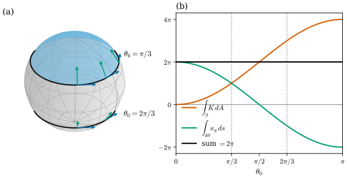
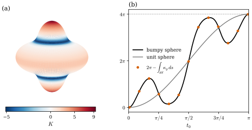

39.4 The Gauss–Bonnet Theorem
Goals
- closed plane curve의 total curvature가 \(2\pi\)의 정수배라는 것에서 출발해, 닫힌 oriented surface의 Gauss–Bonnet theorem \(\int_SK\,dA = 2\pi\chi(S)\)를 정확히 진술하고 genus와 연결할 수 있다.
- boundary가 있는 판 \(\int_SK\,dA + \int_{\partial S}\kappa_g\,ds + \sum_j\varepsilon_j = 2\pi\chi(S)\)를 진술하고, boundary의 orientation과 \(\kappa_g\)의 부호를 맞추어 계산할 수 있다.
- surface of revolution의 cap에서 Gauss–Bonnet theorem을 완전히 증명하고, 일반적인 경우의 Proof sketch를 따라갈 수 있다.
- “surface를 바꾸어도, boundary를 바꾸어도 total curvature가 맞추어진다”는 말의 뜻을 running example로 설명할 수 있다.
Prerequisites
- Section 39.2: geodesic curvature \(\kappa_g\)와 Darboux frame Proposition 39.2.4, circle of latitude Example 39.2.6, 방향을 바꿀 때의 부호 Exercise 39.2.1. Section 39.3: \(K\)와 total curvature의 수치(Implementation 상자).
- turning number(Example 37.2.1, rotation index Definition 5.6.3), rotation index theorem Theorem 5.6.7, curvilinear polygon과 exterior angle Definition 5.6.9, Theorem 5.6.11.
- Euler characteristic \(\chi = n_0 - n_1 + n_2\)와 genus(Section 33.4, (33.4.1)), \(3n_2 = 2n_1\) Proposition 33.4.19.
- Tour: Theorem 0.5.8, Example 0.5.7. surface of revolution의 principal curvature Proposition 8.3.12.
Motivation
Section 39.3의 Implementation 상자에서 \(\int K\,dA/2\pi\)는 sphere와 ellipsoid에서 \(2\), torus에서 \(0\)이었다. ellipsoid는 sphere와 모양이 꽤 다르고 \(K\)의 분포도 다른데 같은 수가 나왔다. torus는 \(K\)가 큰 곳과 음수인 곳이 있는데 정확히 상쇄되었다. 이것이 우연인가?
곡선에서는 비슷한 일을 이미 보았다. closed plane curve의 total curvature \(\int\kappa_s\,ds\)는 언제나 \(2\pi\)의 정수배이고, 그 정수인 turning number는 곡선을 regular하게 변형해도 변하지 않았다(Chapter 37). 강의 슬라이드는 이 비교에서 출발해 surface의 판을 묻는다 [CMU-DDG L15] slide 28. 답이 Gauss–Bonnet theorem이다. 이 절은 smooth 판을 진술하고, 증명은 특별한 경우에 완전하게, 일반적인 경우에 sketch로 한다. mesh의 판은 Chapter 40에서 정의와 함께 완전히 증명한다.
Total Curvature of Closed Curves
먼저 곡선 쪽을 정리해 두자. arc length로 parametrize한 closed regular plane curve \(\gamma\)(주기 \(L\))의 rotation index는 \(\operatorname{rot}(\gamma) = \tfrac{1}{2\pi}\int_0^L\kappa_s\,ds\)이고 정수다(Definition 5.6.3). Chapter 37은 이것을 turning number라 불렀다. 스스로 만나지 않고 반시계 방향으로 도는 곡선에서는 \(\int\kappa_s\,ds = 2\pi\)이다(Theorem 5.6.7, Proposition 5.6.12). vertex에서 꺾이는 곡선(curvilinear polygon)에서는 exterior angle \(\varepsilon_j\)를 더해 \(\int\kappa_s\,ds + \sum_j\varepsilon_j = 2\pi\)이다(Theorem 5.6.11).
Example 39.4.1 (plane domains). 반지름 \(r\)인 원은 \(\kappa_s = 1/r\)이고 길이가 \(2\pi r\)이므로 \(\int\kappa_s\,ds = 2\pi\)이다. flower curve \(r(t) = 1 + 0.3\cos 5t\)는 \(\kappa_s\)가 열 번 부호를 바꾸지만 \(\int\kappa_s\,ds = 2\pi\)이다(Example 37.2.1). 정사각형은 변에서 \(\kappa_s = 0\)이고 네 vertex의 exterior angle이 \(\pi/2\)씩이라 합이 \(2\pi\)다. boundary가 얼마나 복잡하든 결과가 같다.
Verification: verify/v-39-4-gauss-bonnet.py
이 식들을 다음과 같이 읽을 수 있다. 평면 영역 \(D\)에 normal \(\mathbf{N} = e_3\)을 주면 boundary curve의 \(\kappa_s\)는 Section 39.2의 geodesic curvature \(\kappa_g\)와 같다(Example 39.2.2(a)에서 \(\mathbf{N}\times\mathbf{t} = J\mathbf{t}\)). 그리고 평면에서 \(K = 0\)이다. 그러면 위 식은 “\(\int_DK\,dA + \int_{\partial D}\kappa_g\,ds + \sum\varepsilon_j = 2\pi\)”가 된다. 이것이 아래 Gauss–Bonnet theorem의 가장 간단한 경우다 [CMU-DDG L15] slide 30.
The Gauss–Bonnet Theorem
Euler characteristic은 Section 33.4에서 simplicial surface의 개수 \(\chi = n_0 - n_1 + n_2\)로 정의했다. smooth surface \(S\)에서는 \(S\)를 곡선 삼각형들로 나눈 triangulation(삼각분할)의 개수로 \(\chi(S)\)를 정한다. 모든 compact regular surface에 triangulation이 있다는 것과 \(\chi(S)\)가 triangulation에 무관하다는 것은 받아들인다(Section 10.3, mesh에서의 불변성은 Theorem 40.1.5). connected이고 boundary가 없는 orientable surface의 손잡이의 개수 \(g\)를 genus(종수)라 하면 \(\chi = 2 - 2g\)이다((33.4.1)).
Theorem 39.4.2 (Gauss–Bonnet theorem). \(S\)가 boundary가 없는 compact oriented regular surface이면
이다. \(S\)가 connected이고 genus가 \(g\)이면 우변은 \(2\pi(2 - 2g)\)이다 [dC §4-5].
이 정리가 말하는 것. 왼쪽은 점마다의 굽음을 모은 기하적인 양이고, 오른쪽은 구멍의 개수만 세는 topological한 양이다. surface를 어떻게 구부리고 늘여도, 찢거나 붙이지 않는 한 \(\int K\,dA\)는 변하지 않는다. 어딘가를 더 볼록하게 만들면 다른 어딘가가 그만큼 오목해진다. Gauss–Bonnet theorem(가우스-보네 정리)의 이 판은 Tour의 Theorem 0.5.8(b)와 같고, 증명은 아래에서 sketch로 하며 완전한 증명은 Track 3의 Section 10.4에 있다.
Example 39.4.3 (closed running examples). (a) 반지름 \(r\)인 sphere: \(K = 1/r^2\)이고 넓이가 \(4\pi r^2\)이므로 \(\int K\,dA = 4\pi = 2\pi\cdot 2\)이다. icosahedron이 sphere의 triangulation이고 \(\chi = 12 - 30 + 20 = 2\)이다(Section 33.4의 표). (b) ellipsoid \((2, 1.5, 1)\): 수치 적분으로 \(4\pi\)(Section 39.3의 Implementation). (c) torus of revolution: \(K\,dA = \frac{\cos u}{r(R + r\cos u)}\cdot r(R + r\cos u)\,du\,dv\) \(= \cos u\,du\,dv\)이므로 \(\int K\,dA = \int_0^{2\pi}\!\int_0^{2\pi}\cos u\,du\,dv\) \(= 0 = 2\pi\chi(T^2)\)이다(genus \(1\)). 바깥쪽 절반 \(\abs{u} \le \pi/2\)는 \(+4\pi\), 안쪽 절반은 \(-4\pi\)를 준다. 바깥쪽 절반 하나만으로 sphere와 같은 \(4\pi\)인 것은 그 절반의 Gauss map이 \(S^2\)을 한 번 덮기 때문이다(Figure 38.3.1, Exercise 39.3.4).
Verification: verify/v-39-4-gauss-bonnet.py
Surfaces with Boundary
boundary가 있으면 boundary 곡선이 surface 안에서 꺾이는 정도가 더해진다. \(S\)가 unit normal \(\mathbf{N}\)을 갖는 compact surface이고 그 boundary \(\partial S\)가 piecewise regular closed curve \(C_1, \dots, C_b\)로 이루어졌다고 하자. boundary를 걸을 때 surface가 왼쪽에 있도록, 곧 Darboux frame의 \(\mathbf{N}\times\mathbf{t}\)가 \(S\)의 안쪽을 향하도록 도는 방향을 positive orientation이라 한다. 이것은 Stokes's theorem의 orientation(바깥쪽 normal이 먼저, Theorem 35.4.5)과 같다. \(\kappa_g\)는 이 방향으로 잰다. vertex에서는 진행 방향이 tangent plane 안에서 \(\mathbf{N}\) 둘레로 꺾이는 signed angle를 exterior angle \(\varepsilon_j \in (-\pi, \pi)\)라 한다(평면에서는 Definition 5.6.9).
Theorem 39.4.4 (Gauss–Bonnet theorem with boundary). 위의 \(S\)에서 \(\partial S\)에 positive orientation을 주고 vertex의 exterior angle을 \(\varepsilon_j\)라 하면
이다. \(S\)가 connected이고 orientable, genus \(g\), boundary loop \(b\)개이면 \(\chi(S) = 2 - 2g - b\)이다 [dC §4-5].
왼쪽의 세 항은 각각 넓이, 곡선, 점에 몰린 굽음이다. 강의 슬라이드는 이 식의 요점을 total curvature가 surface의 변형에도 boundary의 변형에도 흔들리지 않는다는 것으로 정리한다 [CMU-DDG L15] slide 29. 정확히 말하면, boundary를 고정하고 그 근처의 surface를 그대로 둔 채 안쪽만 바꾸면 \(\int_{\partial S}\kappa_g\)가 그대로이므로 \(\int_SK\,dA\)도 그대로다. 거꾸로 boundary를 움직이면 \(\int K\,dA\)와 \(\int\kappa_g\,ds\)가 서로 주고받으며 합이 유지된다. 다음 예가 그것이다.
Example 39.4.5 (polar caps, the hemisphere, and a geodesic triangle). unit sphere(바깥쪽 \(\mathbf{N}\))에서 colatitude \(\theta_0\)까지의 polar cap \(S_{\theta_0}\)은 disk이므로 \(\chi = 1\)이다. boundary circle를 \(\varphi\)가 커지는 방향으로 돌면 \(\mathbf{N}\times\mathbf{t}\)가 북쪽, 곧 cap의 안쪽을 향하므로 positive orientation이다((39.2.1)). Example 39.2.6의 \(\kappa_g = \cot\theta_0\)과 길이 \(2\pi\sin\theta_0\)에서
이다. cap의 넓이는 Example 7.3.10이다. \(\theta_0 = \pi/2\)(hemisphere)이면 boundary가 적도, 곧 geodesic이라 \(\kappa_g = 0\)이고 \(\int K\,dA = 2\pi\)가 혼자 \(2\pi\)를 낸다. \(\theta_0 \gt \pi/2\)이면 boundary circle가 cap에서 보아 바깥으로 휘므로 \(\kappa_g \lt 0\)이고, 그만큼 넓이 항이 \(2\pi\)를 넘는다. Tour의 Example 0.5.7에서 circle of latitude를 따라 parallel transport한 vector가 \(2\pi\cos\theta_0\) 돈 것이 이 식의 둘째 항이다. octant triangle(세 변이 great circle arc, 세 내각이 \(\pi/2\))은 \(\kappa_g = 0\)이고 세 exterior angle이 \(\pi - \pi/2 = \pi/2\)씩이므로 \(\int K\,dA = 2\pi - 3\pi/2 = \pi/2\)이고, 이것이 넓이 \(4\pi/8\)이다(Theorem 0.5.8(a)).
Verification: verify/v-39-4-gauss-bonnet.py
Figure 39.4.1은 이 주고받음을 보인다. 왼쪽 (a)의 sphere 위에서 하늘색이 \(\theta_0 = \pi/3\)인 cap이고, 아래의 검은 원은 \(\theta_0 = 2\pi/3\)인 cap의 boundary다. 각 boundary circle 위의 파랑 \(\mathbf{t}\)는 positive orientation의 진행 방향, 초록 \(\mathbf{N}\times\mathbf{t}\)는 cap의 안쪽(북쪽)이다. 오른쪽 (b)에서 \(\theta_0\)를 \(0\)에서 \(\pi\)까지 키우면 주홍 \(\int K\,dA\)는 \(0\)에서 \(4\pi\)로 올라가고 초록 \(\int\kappa_g\,ds\)는 \(2\pi\)에서 \(-2\pi\)로 내려가며, 검은 합은 언제나 \(2\pi\)다. 둘이 같아지는 \(\theta_0 = \pi/3\)에서 둘 다 \(\pi\)이고, \(\theta_0 = \pi/2\)에서 초록이 \(0\)을 지난다.

A Complete Proof for Caps of Surfaces of Revolution
polar cap의 계산은 sphere에만 해당하는 것이 아니다. surface of revolution의 cap이면 어떤 모양이든 같은 계산이 된다. 일반적인 Gauss–Bonnet theorem의 증명에는 topology가 필요하지만, 이 경우는 미적분만으로 완전히 증명할 수 있다.
Proposition 39.4.6 (Gauss–Bonnet for caps of surfaces of revolution). arc length로 parametrize한 smooth profile \(\alpha(s) = (\rho(s), z(s))\), \(s \in [0, s_0]\)이 \(\rho(0) = 0\), \(\alpha'(0) = (1, 0)\), \((0, s_0]\)에서 \(\rho \gt 0\)을 만족하고, 그 surface of revolution \(\mathbf{x}(s, v) = (\rho(s)\cos v, \rho(s)\sin v, z(s))\)의 cap \(S = \{s \le s_0\}\)이 regular surface with boundary라 하자. \(\mathbf{N} = \mathbf{x}_s\times\mathbf{x}_v/\abs{\mathbf{x}_s\times\mathbf{x}_v}\)로 두고 boundary circle \(s = s_0\)을 \(v\)가 커지는 방향으로 돌면
이고, 따라서 \(\int_SK\,dA + \int_{\partial S}\kappa_g\,ds = 2\pi = 2\pi\chi(S)\)이다. 이 방향은 positive orientation이다.
Proof idea: arc length profile에서 \(K = -\rho''/\rho\)이고 넓이 요소가 \(\rho\,ds\,dv\)이므로 \(K\,dA = -\rho''\,ds\,dv\)는 exact이다. 적분이 끝점의 \(\rho'\)만 남기고, 그 \(\rho'\)이 정확히 boundary circle의 \(\kappa_g\)다.
Proof. Curvature. \(\abs{\alpha'} = 1\)이므로 (8.3.5)의 두 principal curvature는 \(\rho'z'' - \rho''z'\)와 \(z'/\rho\)이고, \(K = (\rho'z'' - \rho''z')z'/\rho\)이다. \(\rho'^2 + z'^2 = 1\)을 미분하면 \(\rho'\rho'' + z'z'' = 0\)이므로 \((\rho'z'' - \rho''z')z' = \rho'(z'z'') - \rho''z'^2\) \(= -\rho''\rho'^2 - \rho''z'^2 = -\rho''\)이다. 곧 \(K = -\rho''/\rho\)이다.
Area term. \(\mathbf{x}_s = (\rho'\cos v, \rho'\sin v, z')\), \(\mathbf{x}_v = (-\rho\sin v, \rho\cos v, 0)\)이므로 \(E = 1\), \(F = 0\), \(G = \rho^2\)이고 \(dA = \rho\,ds\,dv\)이다. 극(\(s = 0\))은 넓이가 \(0\)인 한 점이므로 \((0, s_0]\times[0, 2\pi]\)에서 적분해도 된다. \(K\,dA = -\rho''\,ds\,dv\)이므로
\[ \begin{aligned} \int_SK\,dA &= \int_0^{2\pi}\!\!\int_0^{s_0}(-\rho'')\,ds\,dv \\ &= -2\pi\big(\rho'(s_0) - \rho'(0)\big) = 2\pi\big(1 - \rho'(s_0)\big) \end{aligned} \]
이다(\(\rho'(0) = 1\)).
Boundary term. boundary circle \(c(v) = \mathbf{x}(s_0, v)\)는 반지름 \(\rho_0 = \rho(s_0)\)인 원이고 arc length는 \(\rho_0v\)이다. \(\mathbf{t} = (-\sin v, \cos v, 0)\), \(\mathbf{t}' = -\tfrac{1}{\rho_0}(\cos v, \sin v, 0)\)이고, Example 7.5.2(d)에서 \(\mathbf{N} = (-z'\cos v, -z'\sin v, \rho')\)이다. 그러면
\[ \mathbf{N}\times\mathbf{t} = (-\rho'\cos v,\ -\rho'\sin v,\ -z') = -\mathbf{x}_s \]
이므로(성분을 직접 계산한다) \(\kappa_g = \inner{\mathbf{t}'}{\mathbf{N}\times\mathbf{t}} = \rho'(s_0)/\rho_0\)이고, 길이 \(2\pi\rho_0\)을 곱하면 \(\int_{\partial S}\kappa_g\,ds = 2\pi\rho'(s_0)\)이다. 또 \(\mathbf{N}\times\mathbf{t} = -\mathbf{x}_s\)는 \(s\)가 줄어드는 쪽, 곧 cap의 안쪽을 향하므로 이 방향이 positive orientation이다. cap은 극을 중심으로 한 disk이므로 \(\chi(S) = 1\)이다.
무엇이 일어났는가. 넓이 항과 boundary term이 모두 boundary에서의 \(\rho'(s_0)\), 곧 profile의 tangent가 축과 이루는 각의 sine만으로 정해졌다. cap 안에서 profile이 얼마나 출렁이든 상관이 없다. 이것이 “surface를 바꾸어도 total curvature가 변하지 않는다”의 가장 구체적인 모습이다. 끝점이 남극(\(\rho(s_0) = 0\), \(\rho'(s_0) = -1\))이면 cap이 닫힌 surface가 되고 \(\int K\,dA = 2\pi(1 - (-1)) = 4\pi\)이다. profile이 축과 만나지 않는 closed curve(torus)이면 \(\int K\,dA = -2\pi\oint\rho''\,ds = 0\)이다. Theorem 39.4.2의 두 경우를 이렇게 직접 얻는다.
Example 39.4.7 (a bumpy sphere). \(\rho(t) = 1 + 0.2\cos 4t\)로 sphere를 부풀린 \(\mathbf{x}(t, v) = \rho(t)(\sin t\cos v, \sin t\sin v, \cos t)\)는 profile \((\rho(t)\sin t, \rho(t)\cos t)\)의 surface of revolution이다(\(\cos 4t\)는 \(\cos t\)의 다항식이라 극에서도 smooth하다). \(K\)는 \(-5.01\)에서 \(9.34\)(극에서의 값 \(3025/324\))까지 변하고 음수인 띠가 둘 있다. 그래도 북극에서 \(t_0\)까지의 cap에서 (39.4.4)의 합은 늘 \(2\pi\)이고, 전체는 \(\int K\,dA = 4\pi\)다. 아래 Implementation 상자가 arc length가 아닌 parameter \(t\)로 두 항을 계산한다.
Verification: verify/v-39-4-gauss-bonnet.py
Figure 39.4.2의 왼쪽 (a)는 bumpy sphere를 \(K\)로 칠한 것이다. 북극과 남극 근처와 적도의 넓은 띠가 빨강(\(K \gt 0\))이고, 그 사이의 좁은 두 띠가 파랑(\(K \lt 0\))이다. 오른쪽 (b)의 검은 곡선은 북극에서 \(t_0\)까지의 cap의 \(\int K\,dA\)다. 빨간 띠를 지날 때 빠르게 오르고, 파란 띠를 지날 때 내려간다. 회색 곡선(round sphere의 \(2\pi(1 - \cos t_0)\))과 모양이 전혀 다르지만, 둘 다 \(t_0 = \pi\)에서 \(4\pi\)에 닿는다. 주홍 점은 같은 값을 boundary term으로 계산한 \(2\pi - \int_{\partial S}\kappa_g\,ds\)이고, 검은 곡선 위에 정확히 놓인다.

Non-example 39.4.8 (compactness matters). catenoid \((\cosh v\cos u, \cosh v\sin u, v)\)(\(v \in \R\))는 cylinder와 homeomorphic이라 그 triangulation의 개수로는 \(\chi = 0\)일 것 같지만, compact가 아니다. 그리고 \(\int K\,dA = -2\pi\int_{-\infty}^{\infty}\operatorname{sech}^2v\,dv = -4\pi \neq 0\)이다(Exercise 39.3.6의 극한). Gauss map이 \(S^2\)에서 두 점을 뺀 것을 한 번 덮기 때문이다. compact하지 않은 surface에서는 무한히 먼 곳의 “boundary”가 total curvature를 가져간다.
Verification: verify/v-39-4-gauss-bonnet.py
Proof Sketch of the General Theorem
일반적인 경우의 증명은 두 단계다. 첫 단계는 미적분, 둘째 단계는 셈이다.
Proof sketch. (Theorem 39.4.2와 Theorem 39.4.4) 1단계(local Gauss–Bonnet). 한 좌표 neighborhood 안에 들어가는 작은 곡선 삼각형 \(T\)(세 변이 regular curve, vertex의 내각 \(\phi_1, \phi_2, \phi_3\))에서
\[ \begin{aligned} &\int_TK\,dA + \int_{\partial T}\kappa_g\,ds \\ &\qquad + \sum_{a=1}^3(\pi - \phi_a) = 2\pi \end{aligned} \]
이다. 이것은 평면 곡선의 rotation index theorem(Theorem 5.6.11)을 좌표 평면에서 쓰고, 좌표의 비틀림이 만드는 차이를 Green's theorem으로 넓이 적분 \(\int_TK\,dA\)로 바꾸어 얻는다 [dC §4-5]. 이 단계는 여기서 증명하지 않는다.
2단계(합치기). \(S\)를 이런 작은 삼각형 \(n_2\)개로 나누고(vertex \(n_0\)개, edge \(n_1\)개) 1단계의 식을 모두 더한다. 오른쪽은 \(2\pi n_2\)다. 왼쪽에서 \(\int K\,dA\)는 \(\int_SK\,dA\)가 된다. 안쪽 edge는 이웃한 두 삼각형이 반대 방향으로 지나므로 \(\kappa_g\)의 적분이 상쇄된다(Exercise 39.2.1(a)). 내각은 vertex마다 모여 합이 \(2\pi\)이므로 \(\sum(\pi - \phi) = 3\pi n_2 - 2\pi n_0\)이다. boundary가 없으면 \(3n_2 = 2n_1\)(Proposition 33.4.19)이므로
\[ \begin{aligned} \int_SK\,dA &= 2\pi n_2 - 3\pi n_2 + 2\pi n_0 \\ &= 2\pi n_0 - \pi n_2 = 2\pi(n_0 - n_1 + n_2) \end{aligned} \]
이다. boundary가 있으면 boundary edge의 \(\kappa_g\)는 상쇄되지 않고 남고, boundary vertex의 내각의 합은 \(\pi - \varepsilon_j\)(꺾이지 않는 점에서는 \(\pi\))이며, \(3n_2 = 2n_1 - n_1^\partial\)을 쓰면 같은 셈으로 (39.4.2)가 나온다.
2단계의 셈은 mesh 위에서 그대로 정확한 정리가 된다. 평평한 삼각형에서는 1단계가 “내각의 합이 \(\pi\)”라는 사실로 바뀌고 \(K\)와 \(\kappa_g\)가 모두 vertex의 angle defect로 옮겨 가기 때문이다. 그 정의와 완전한 증명은 Definition 40.1.1과 Theorem 40.2.1, Theorem 40.2.6에서 한다.
Summary
- closed plane curve의 total curvature는 \(2\pi\cdot\operatorname{rot}\)이고, 평면 영역의 boundary에서는 \(\int\kappa_g\,ds + \sum\varepsilon_j = 2\pi\)이다.
- boundary가 없는 compact oriented surface에서 \(\int_SK\,dA = 2\pi\chi(S) = 2\pi(2 - 2g)\)이다(Theorem 39.4.2). sphere와 ellipsoid는 \(4\pi\), torus는 \(0\)이다.
- boundary가 있으면 positive orientation으로 잰 \(\int\kappa_g\,ds\)와 exterior angle을 더해 \(2\pi\chi(S)\)가 된다(Theorem 39.4.4). polar cap에서는 \(2\pi(1 - \cos\theta_0) + 2\pi\cos\theta_0 = 2\pi\)이다.
- surface of revolution의 cap에서는 \(K\,dA = -\rho''\,ds\,dv\)라 정리가 미적분만으로 증명된다(Proposition 39.4.6). 일반적인 증명은 local Gauss–Bonnet과 triangulation의 셈이고, 그 셈은 mesh에서 정확한 항등식이 된다(Section 40.2).
- compact가 아니면 정리가 성립하지 않는다(catenoid의 \(-4\pi\)).
다음 절에서는 지금까지의 양을 두 bilinear form으로 정리한다. first fundamental form과 second fundamental form은 surface를 rigid motion을 제외하고 정하고, mesh에서는 edge length와 bending angle이 그 역할을 한다.
Exercises
Exercise 39.4.1 ★ (a) genus \(2\)인 닫힌 oriented surface의 \(\int K\,dA\)는? (b) sphere에서 서로 겹치지 않는 disk 세 개를 뺀 surface의 boundary가 모두 geodesic이고 vertex가 없다면 \(\int K\,dA\)는? (c) genus \(g \ge 1\)인 닫힌 surface에서 모든 점이 \(K \gt 0\)일 수 있는가?
Solution
(a) \(\chi = 2 - 2\cdot 2 = -2\)이므로 \(-4\pi\)이다. (b) \(\chi = 2 - 0 - 3 = -1\)이고 \(\kappa_g = 0\), \(\varepsilon_j\)가 없으므로 \(\int K\,dA = -2\pi\)이다. (\(K \lt 0\)인 곳이 반드시 있다.) (c) 없다. \(K \gt 0\)이면 \(\int K\,dA \gt 0\)인데 \(2\pi(2 - 2g) \le 0\)이다. 곧 모든 점에서 \(K \gt 0\)인 닫힌 surface(ovaloid)는 genus \(0\)이다.
Exercise 39.4.2 ★ unit sphere에서 북극과 적도 위의 두 점 \((1, 0, 0)\), \((\cos\alpha, \sin\alpha, 0)\)(\(0 \lt \alpha \lt \pi\))을 great circle의 호로 이은 삼각형의 넓이를 (39.4.2)로 구하여라.
Solution
세 변이 great circle의 호이므로 \(\kappa_g = 0\)이다. 적도 위 두 vertex의 내각은 meridian과 적도가 만나는 직각 \(\pi/2\)이고, 북극의 내각은 두 meridian 사이의 각 \(\alpha\)이다. exterior angle은 \(\pi - (\text{내각})\)이므로 합이 \(\pi/2 + \pi/2 + (\pi - \alpha) = 2\pi - \alpha\)이고, \(\chi = 1\)이므로 \(\int K\,dA = 2\pi - (2\pi - \alpha) = \alpha\)이다. \(K = 1\)이므로 넓이가 \(\alpha\)다. 직접 계산하면 넓이는 \(\int_0^\alpha\!\int_0^{\pi/2}\sin\theta\,d\theta\,d\varphi = \alpha\)로 같다. \(\alpha = \pi/2\)이 octant triangle이다.
Exercise 39.4.3 ★★ 반지름이 \(\rho_1 \lt \rho_2\)인 두 원 사이의 cone의 띠(frustum) \(\{(\rho\cos v, \rho\sin v, h(\rho_2 - \rho)) : \rho_1 \le \rho \le \rho_2\}\)(\(h \gt 0\))는 \(K = 0\)이고 annulus라 \(\chi = 0\)이다. Proposition 39.4.6의 증명에서 쓴 \(\kappa_g = \rho'/\rho\)(arc length profile)로 두 boundary circle의 \(\int\kappa_g\,ds\)를 각각 구하고, Theorem 39.4.4가 성립함을 확인하여라.
Hint
profile을 \(\rho\)가 커지는 방향의 arc length \(s\)로 parametrize하면 \(\rho' = 1/\sqrt{1 + h^2}\)로 상수다. 한 boundary circle는 \(v\)가 커지는 방향, 다른 하나는 반대 방향이 positive orientation이다.
Solution
profile \(\alpha(s) = (\rho(s), z(s))\)는 직선이고 \(\rho' = c := 1/\sqrt{1 + h^2}\)이다. Proposition 39.4.6의 증명에서 \(v\)가 커지는 방향으로 돈 원 \(s = s_*\)는 \(\kappa_g = \rho'/\rho\), \(\mathbf{N}\times\mathbf{t} = -\mathbf{x}_s\)(\(s\)가 줄어드는 쪽)이었다. 띠는 \(s\)가 \(\rho_1\)과 \(\rho_2\)에 해당하는 값 사이에 있으므로, 바깥 원 \(\rho = \rho_2\)는 \(v\)가 커지는 방향이 positive(안쪽이 \(s\)가 줄어드는 쪽)이고 \(\int\kappa_g\,ds = \tfrac{c}{\rho_2}\cdot2\pi\rho_2 = 2\pi c\)이다. 안쪽 원 \(\rho = \rho_1\)은 반대 방향이 positive이므로 \(\kappa_g\)의 부호가 바뀌어(Exercise 39.2.1(a)) \(\int\kappa_g\,ds = -2\pi c\)이다. 합은 \(0\)이고 \(\int K\,dA = 0\), vertex가 없으므로 \(0 = 2\pi\chi\)이다. 두 boundary circle가 모두 \(c \neq 0\)만큼 휘어 있지만 정확히 상쇄된다. cone의 띠를 펼치면 평면의 annulus 조각(부채꼴 띠)이 되는데, 두 호의 \(\kappa_g\)가 거기서도 상쇄되는 것과 같다.
Exercise 39.4.4 ★ 참인지 거짓인지 말하고 이유를 써라. (a) unit sphere 위의 simple closed curve가 둘러싼 영역 \(R\)의 넓이를 \(A\)라 하면, \(R\)에 대해 positive orientation으로 잰 \(\int\kappa_g\,ds\)는 \(2\pi - A\)이다(vertex는 없다). (b) closed surface를 늘이고 구부리면(찢거나 붙이지 않고) \(\int K\,dA\)가 바뀔 수 있다. (c) (39.4.2)에서 boundary의 방향을 거꾸로 잡으면 등식이 그대로 성립한다.
Solution
(a) 참. \(R\)은 disk이므로 \(\chi = 1\)이고, \(K = 1\)에서 \(\int_RK\,dA = A\)이므로 \(\int\kappa_g\,ds = 2\pi - A\)이다((39.4.3)가 그 예). (b) 거짓. 그런 변형에서 \(S\)는 homeomorphic하게 남으므로 \(\chi\)가 같고, (39.4.1)에서 \(\int K\,dA\)가 같다. (c) 거짓. 방향을 뒤집으면 \(\kappa_g\)와 exterior angle의 부호가 모두 바뀌어 \(\int K\,dA - \int\kappa_g\,ds - \sum\varepsilon_j\)가 되고, 일반적으로 \(2\pi\chi\)가 아니다. 예: polar cap에서 \(2\pi(1 - \cos\theta_0) - 2\pi\cos\theta_0 \neq 2\pi\)(\(\theta_0 \neq \pi/2\)).
Exercise 39.4.5 ★
Coding. torus of revolution \((R, r) = (2, 0.8)\)의 띠 \(\{u_1 \le u \le u_2\}\), \((u_1, u_2) = (-1, 2)\)에서 Theorem 39.4.4를 확인하여라. Implementation 상자의 cap_terms를 profile \((2 + 0.8\cos t, 0.8\sin t)\)에 쓰고, 두 boundary circle의 positive orientation을 정하여라. 넓이 항을 닫힌 꼴 \(2\pi(\sin u_2 - \sin u_1)\)과 비교하여라.
Solution
u1, u2 = -1.0, 2.0
A1, B1 = cap_terms(torus, u1)
A2, B2 = cap_terms(torus, u2)
area_term = A2 - A1 # K dA over the band u1 <= u <= u2
boundary_term = B2 - B1 # circle u = u2 with v increasing, circle u = u1 with v decreasing
print(f"int K dA {area_term:+.5f} exact 2 pi (sin u2 - sin u1) {2 * np.pi * (np.sin(u2) - np.sin(u1)):+.5f}")
print(f"int kappa_g ds {boundary_term:+.5f} sum {round(area_term + boundary_term, 5) + 0.0:+.5f} = 2 pi chi(annulus) = 0")
int K dA +11.00040 exact 2 pi (sin u2 - sin u1) +11.00040
int kappa_g ds -11.00040 sum +0.00000 = 2 pi chi(annulus) = 0cap_terms(torus, u)의 넓이 항은 \(\int_0^u\)이므로(넓이 항은 \(r(0) = 0\)을 쓰지 않는다) 차 \(A_2 - A_1\)이 띠의 \(\int K\,dA\)다. torus에서 \(K\,dA = \cos u\,du\,dv\)이므로 정확한 값은 \(2\pi(\sin 2 + \sin 1) = 11.0004\)이다. boundary term: \(v\)가 커지는 방향으로 돈 원 \(u = u_*\)의 \(\mathbf{N}\times\mathbf{t}\)는 \(u\)가 줄어드는 쪽을 향한다(Proposition 39.4.6의 증명과 같은 계산, 또는 Exercise 39.2.4). 그러므로 위쪽 원 \(u = u_2\)는 \(v\)가 커지는 방향이 positive이고(\(B_2\)), 아래쪽 원 \(u = u_1\)은 반대 방향이 positive라서 부호를 바꾼 \(-B_1\)이다. 합이 \(0 = 2\pi\chi\)(annulus, \(\chi = 2 - 0 - 2 = 0\))다.